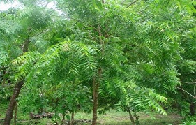

Neem Tree
Neem leaf is used for leprosy, eye disorders, bloody nose, intestinal worms, stomach upset, loss of appetite, skin ulcers, diseases of the heart and blood vessels Neem Tree
Neem leaf is used for leprosy, eye disorders, bloody nose, intestinal worms, stomach upset, loss of appetite, skin ulcers, diseases of the heart and blood vessels Neem Tree
Cork is an impermeable buoyant material, the phellem layer of bark tissue that is harvested for commercial use primarily from Quercus suber (the cork oak), which is endemic to southwest Europe and northwest Africa. Cork Tree

Oak trees are a common tree with hundreds of applications. Oak trees produce acorns that can be used in certain foods and beverages, wood that is used in various types of construction and even in the aging of wine. The Oak Tree
One popular use for cedar wood is in clothing storage furnishings, such as wardrobes, chests and trunks. Part of the reason cedar is aromatic is because it bears thujaplicin, a natural antibacterial and antifungal agent. Cedar Tree
Hawthorn is a plant. The leaves, berries, and flowers of hawthorn are used to make medicine. Hawthorn is used for diseases of the heart and blood vessels such as congestive heart failure (CHF), chest pain, and irregular heartbeat. Hawthorn Tree
Beech wood is used for the stocks of military rifles when traditionally preferred woods such as walnut are scarce or unavailable or as a lower-cost alternative. The fruit of the beech tree, known as beechnuts or mast, is found in small burrs that drop from the tree in autumn. Beech Tree